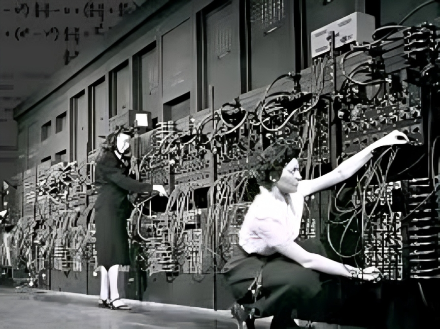

Historien Bakom AI
Idén om maskiner som kan tänka och agera som människor är inte ny. Redan i antikens mytologi fanns berättelser om skapelser i brons och lera som gavs liv (som Talos eller Golem). Den moderna artificiella intelligensen föddes dock ur mellankrigstidens matematik och filosofi.

Turingtestet och 1950-talet
Ett av de absolut viktigaste startskotten för fältet skedde 1950 när den brittiske matematikern Alan Turing publicerade sin artikel "Computing Machinery and Intelligence". Där formulerade han Turingtestet – ett experiment designat för att avgöra om en maskin uppvisar intelligent beteende som inte går att skilja från en människas.
Begreppet "Artificiell Intelligens" myntades därefter officiellt under en sommarkonferens vid Dartmouth College år 1956. Forskare som John McCarthy, Marvin Minsky och Claude Shannon var några av de pionjärer som närvarade och lade grundstenarna för den tidiga forskningen.
Vintrar och Vårar
AI:s historia kännetecknas av stora upp- och nedgångar, ofta kallade "AI-vintrar" och "AI-vårar". Under perioder av optimism överfinansierades projekten och förhoppningarna var ofta orealistiska (exempelvis trodde man på 60-talet att maskinell översättning skulle lösas inom fem år). När man insåg att den tidens datorkraft var alldeles för begränsad drogs finansieringen in, vilket resulterade i kalla AI-vintrar där väldigt lite framsteg gjordes.
Det var inte förrän på 2010-talet, tack vare gigantiska framsteg inom hårdvara (bland annat grafikkort, GPU:er) och enorma mängder data via internet (Big Data), som neurala nätverk och djupinlärning verkligen kunde få sitt stora genombrott. Detta lade grunden för den snabba utveckling vi ser idag.